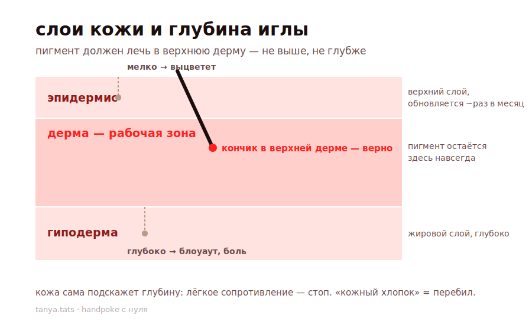
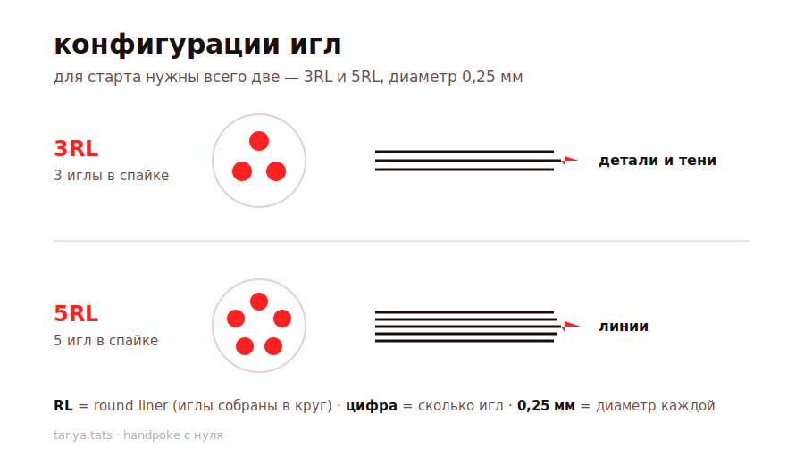
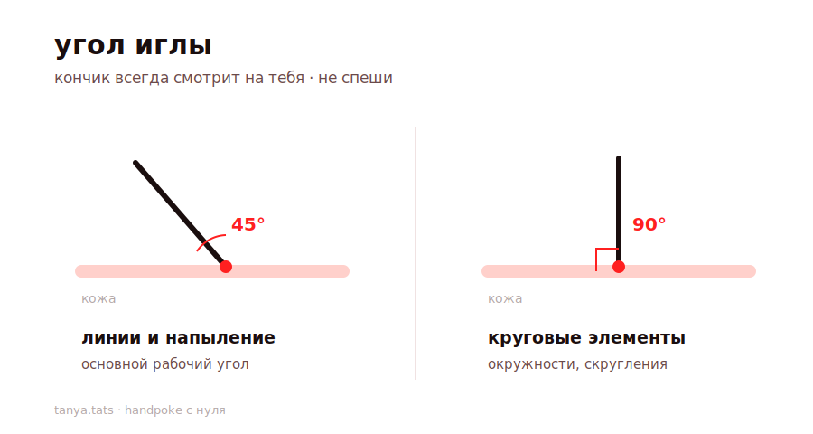

ручная техника татуировки — без машинки, точка за точкой. этот курс проведёт тебя от полного нуля до первой чистой работы. читай по порядку, не перескакивай: каждый модуль опирается на предыдущий. а после теории тебя ждут две личные видеоконсультации со мной.
и сразу главное: татуировка — это прокол кожи и контакт с кровью. всё, что здесь написано про стерильность и безопасность, — не формальность, а то, что защищает тебя и человека под иглой. если сомневаешься — не коли.
я всегда любила перенос рисунка на кожу — для меня это тоже форма искусства. и в какой-то момент я подумала: почему бы не создавать эти творения прямо на телах людей?
ручная техника отбрасывает нас к чему-то древнему и настоящему. это ремесло в чистом виде — только я и мой инструмент, ничего лишнего, никаких сложных механизмов в руках. в этом и есть магия handpoke.
я занимаюсь ручной техникой уже 5 лет. в своё время я сама купила обучение — и ни разу об этом не пожалела. мне особенно зашёл формат, где тебе выдают готовый материал и ты идёшь по нему шаг за шагом. поэтому и свой курс я построила так же — чтобы у тебя на руках было всё, что нужно, без воды.
handpoke — это техника нанесения татуировки, где вместо механизированной машинки я использую силу собственной руки. игла, пигмент, моя рука — и рисунок рождается точка за точкой.
для меня и для клиента это очень медитативный процесс. здесь нет жужжания и спешки — есть спокойный ритм, в котором из маленьких точек складывается любое изображение.
главное, что даёт ручная техника, — полное чувство контроля. ты из маленьких точек создаёшь абсолютно любое творение: это может быть мягкое напыление или чёткая статичная линия. всё в твоих руках буквально.
ручная техника великолепна для напылений и линий — вот где она раскрывается по-настоящему.
а вот объём — большие плотные работы — назову честным «мучением»: за один присест такое не сделать, приходится делить на сеансы. но здесь нет ничего невозможного — просто вопрос времени и терпения :)
миф 1: «это очень больно». на первом месте, конечно, страх боли. хотя на деле мои клиенты засыпают у меня на сеансах — вот вам и вся боль.
миф 2: «контуры со временем расплывутся». всё просто: это зависит от глубины, на которую вводишь иглу. перебить кожу можно и иглой, и машинкой одинаково — дело не в технике, а в руке мастера.
миф 3: «ручные тату смываются». тоже заблуждение. при правильной технике handpoke держится, как и любая другая татуировка.
ничего не бойся. твой ключ — в правильной технике. это не дар и не удача — это практика и грамотно поставленная рука. всё получится!
этот модуль — фундамент. чтобы уверенно работать иглой, нужно понимать, что за ремесло у тебя в руках и с каким «материалом» ты имеешь дело. не пропускай: именно эта теория объясняет, почему техника работает так, а не иначе.
ручная татуировка — это не модный тренд, а древнейшая форма искусства на теле, которая старше любой машинки на тысячи лет. машинку для тату запатентовали только в конце 19 века, а до этого вся татуировка в мире была ручной.
несколько фактов, которые стоит знать:
когда ты берёшь иглу в руку, ты продолжаешь эту линию. handpoke сегодня — это возвращение к тому самому древнему, тактильному, честному ремеслу. и в этом его сила.
чтобы понимать глубину, заживление и почему тату держится, нужно знать, из чего состоит кожа. у неё три основных слоя:
эпидермис — верхний слой. это тот слой, который мы видим и трогаем. он постоянно обновляется: старые клетки отшелушиваются, новые приходят снизу. полное обновление эпидермиса — примерно раз в месяц. и вот ключевой момент: если ввести пигмент только в эпидермис — он уйдёт вместе с обновлением кожи. тату просто сойдёт за несколько недель. поэтому «слишком мелко» = пигмент не задержится.
дерма — средний слой, наша рабочая зона. под эпидермисом лежит дерма — плотный, живой слой с сосудами и нервными окончаниями. пигмент должен лечь именно сюда, в верхнюю часть дермы. дерма не обновляется, как эпидермис, — она стабильна. поэтому пигмент, попавший в дерму, остаётся там навсегда. вот почему правильная глубина так важна: не в эпидермис (сойдёт), не слишком глубоко (расплывётся и больно), а в верхнюю дерму — золотая середина.
гиподерма — нижний слой. это подкожная жировая клетчатка. сюда пигмент вводить нельзя — слишком глубоко, это и есть тот самый «перебор», блоуаут, боль и плохое заживление.

это тот самый миф из начала курса, и вот его научное объяснение. когда пигмент попадает в дерму, организм воспринимает частицы краски как «чужаков» и посылает к ним клетки-защитники — макрофаги. они захватывают частицы пигмента, но переварить их не могут — частицы слишком крупные. так макрофаги и остаются в дерме, удерживая пигмент на месте. по сути, твоя татуировка держится потому, что иммунные клетки её «обнимают» и не отпускают. вот почему тату — навсегда, и вот почему глубина решает всё: попал в дерму — остался навсегда, попал выше — сошёл.
вся эта теория сводится к одному практическому выводу, который ты будешь чувствовать рукой:
когда в модуле про технику я говорю «кожа сама говорит» и «чувствуешь сопротивление — убирай иглу», — речь именно об этом переходе из эпидермиса в дерму. ты научишься ловить его на ощупь. а теперь ты понимаешь, что именно происходит под иглой.
ручная техника хороша тем, что инструментов немного — но каждый важен. не экономь на том, что входит в контакт с кожей: дешёвые иглы и непроверенный пигмент — это не экономия, а риск.
я работаю иглами Excalibur Professional — профессиональный российский бренд, который я люблю за качество: хирургическая нержавеющая сталь, аккуратная заточка, стабильное острие. найти их можно в тату-магазинах (Tattoo Market) и на маркетплейсах.
мои фавориты — два размера, и для старта больше ничего не нужно:
3RL 0,25 мм — для тонких деталей и мягких теней. три иглы в спайке, тонкий диаметр — идеально для деликатной проработки, лёгкого напыления, мелких элементов.
5RL 0,25 мм — для линий, однозначно. пять игл в спайке дают уверенную, чистую линию. нужен контур — беру эту.
маркировка: цифра — количество игл в спайке (3 или 5), RL — Round Liner (иглы в круг, «лайнер»), 0,25 мм — диаметр каждой иглы. чем тоньше диаметр, тем деликатнее работа.

начни с этих двух: 3RL для деталей и теней, 5RL для линий. каждая игла одноразовая — вскрыл при клиенте, отработал, утилизировал в контейнер для острых отходов. никогда не переиспользуй, даже на себе.
чёрный — однозначно Allegory Black. это мой основной пигмент для handpoke, на нём и строится большинство работ.
для цвета — World Famous Tattoo Ink (ворлд феймос). американские профессиональные краски, известные яркими цветами, безопасным составом и хорошим заживлением.
только профессиональные тату-пигменты — никаких чернил «не для тату», это опасно.
я не использую держатель — беру иглу прямо в руку, в перчатке. мне так удобнее: рука напрямую чувствует инструмент, ничего лишнего между тобой и работой. это очень в духе handpoke — только ты и игла.
если тебе на старте так некомфортно — можешь попробовать одноразовый пен-холдер. но со временем многие приходят к тому, что рука без держателя даёт больше контроля. попробуй оба варианта и оставь тот, в котором рука увереннее.
вот что всегда на моём столе:
как правильно собрать столик и организовать рабочее место — разберём отдельно чуть позже, это отдельная важная тема.
есть два пути, и выбор зависит от того, что хочешь получить.
рисую прямо на коже — от руки, когда работа это позволяет.
перенос через принтер — и тут два типа, важно не путать:
факс-принтер (термотрансферный) — если нужно, чтобы рисунок держался долго и был контрастным. даёт чёткий, стойкий отпечаток контура — отлично для линейных работ.
обычный принтер (с трансферным пигментом) — если нужны детали или напыление. позволяет перенести более тонкую, деликатную графику.
коротко: контраст и стойкая линия → факс-принтер; детали и напыление → обычный принтер.
это самый важный модуль курса. технику ты докрутишь со временем, а заражение, травму или занесённую инфекцию не «переделаешь». здесь нет мелочей — всё, что ниже, защищает и клиента, и тебя. если сомневаешься в стерильности хоть на секунду — остановись и переделай.
принцип простой: всё, к чему ты прикоснёшься во время сеанса, должно быть либо одноразовым, либо укрытым барьерной защитой. во время работы твои руки в контакте с кровью и пигментом, и любая поверхность, которой ты касаешься, становится источником переноса.
порядок подготовки: - сначала обработай все поверхности Аламинолом — стол, зону работы. - затем всё обматываю стрейч-плёнкой — это барьерный слой: рабочая поверхность, кушетка, то, чем держишь и опираешься, лампа, бутылочки, провода. всё, к чему будешь прикасаться в перчатках, уходит под плёнку. - сверху — стоматологическая салфетка или пелёнка на рабочую поверхность (поверх плёнки). - кушетку тоже: сначала стрейч-плёнка, потом пелёнка. - разложи одноразовое: капсулу под пигмент (силикон/мягкая резина), ватные диски, иглы в запайке, станок — всё стерильное, приготовленное заранее.
логика двухслойная: плёнка — барьер, пелёнка/салфетка — рабочий чистый верх. меняешь всё под каждого клиента.
порядок: 1. вымой руки с мылом, тщательно. 2. обработай антисептиком для рук. 3. надень одноразовые нитриловые перчатки.
меняй перчатки, если: - перчатка порвалась или проколота; - ты прикоснулась к чему-то нестерильному (телефон, лицо, волосы, незащищённая поверхность); - отходишь и возвращаешься к работе.
держи запас перчаток под рукой — менять их часто это нормально.
игла — единственное, что проникает под кожу, поэтому к ней максимум внимания. работаем только одноразовыми стерильными иглами в заводской запайке. правило простое: одна игла — один клиент — одна работа, после чего утилизация. никогда не переиспользуй, не «отложи на потом», не протирай спиртом для повторного использования — стерильность после вскрытия теряется навсегда.
покажи иглу клиенту перед вскрытием. это не формальность, а часть доверия и твоя репутация: - достань запаянную иглу и покажи человеку упаковку целой — что она запечатана заводом и раньше не вскрывалась. - покажи срок годности на упаковке — у стерильных игл он есть, и он должен быть действующим. просроченная игла считается нестерильной, ей не работаем. - убедись сама и дай убедиться клиенту, что упаковка не повреждена: нет разрывов, вздутий, следов вскрытия. если целостность нарушена — бери новую, эту утилизируй. - только теперь вскрывай — при клиенте, у него на глазах. человек своими глазами видит, что игла новая и стерильная. это снимает главный страх любого клиента про гигиену.
после работы — сразу в контейнер для острых отходов (жёлтый бокс для медицинских острых отходов). не в обычный мусор, не остриём на стол, не «уберу потом». использованная игла — это медицинский отход, контактировавший с кровью, и обращаться с ним нужно соответственно. так ты защищаешь и себя, и всех вокруг от случайного укола.
порядок обработки зоны: 1. осмотри кожу — нет ли родинок, воспалений, повреждений в зоне работы (по ним не колем). 2. побрей зону одноразовым станком. 3. обработай специальным кожным антисептиком (именно кожным — тем, что предназначен для кожи перед процедурой, не тем, чем протираешь поверхности). 4. нанеси эскиз. 5. в процессе периодически очищай зону от излишков пигмента и сукровицы ватными дисками. 6. по завершении — финальная обработка и заживляющее под плёнку/пелёнку.
это стоп-факторы. при них работу не делаем либо просим человека сначала проконсультироваться с врачом. ты не врач и не берёшь на себя чужие риски:
если сомневаешься — лучше перенести или отказать. хороший мастер умеет говорить «нет».
ты контактируешь с кровью, поэтому бережёшь и себя не меньше, чем клиента: - всегда в перчатках, без исключений. порвалась или проколол — сразу меняй. - заклей свои микроранки и порезы на руках до сеанса, даже если они кажутся мелкими. - работай с иглой внимательно и всегда контролируй её кончик — не коли себя, не размахивай, не клади остриём куда попало. отработала → сразу в контейнер. - следи за собственным здоровьем и прививками. тема гепатита B актуальна для всех, кто работает с кровью, — прививка от него есть, проконсультируйся с врачом.
если всё же уколол(а) себя использованной иглой — не паникуй, но действуй сразу: - дай ранке немного кровить, не зажимай — так часть попавшего вымывается наружу. - промой проточной водой с мылом, обработай кожным антисептиком. - при укусе тревоги — обратись к врачу: при контакте с чужой кровью есть протокол профилактики, и чем раньше, тем лучше. - держи на столе аптечку: антисептик, пластыри, перчатки на замену. это часть готового рабочего места.
это то, что новички не замечают, а именно оно чаще всего и приводит к проблемам. перекрёстное загрязнение — когда «грязь» с одной поверхности переносится на стерильную через твои руки или инструмент. правила, которые это предотвращают:
держи в голове простой образ: во время работы твои руки «грязные». всё, к чему ты в этот момент прикасаешься, ты либо потом выбросишь, либо оно должно быть под барьерной плёнкой.
самое опасное у новичков — пренебрежение стерильностью ради удобства. коснуться телефона рукой в рабочей перчатке и продолжить, вернуть излишек пигмента обратно во флакон, использовать одну пару перчаток «на всё». каждое такое «мелкое» нарушение — прямой путь к заражению.
запомни: стерильность важнее красоты линии. кривую линию переделаешь на следующем сеансе. занесённую инфекцию — нет.
это сердце ручной техники. здесь важно не вызубрить, а нарабатывать руку — но вот ориентиры, с которых начинаешь.
локоть всегда на что-то опирается — на весу не работаем. никогда.
рука без опоры дрожит, устаёт и гуляет — линия неровная, глубина скачет. как только есть точка опоры (локоть, предплечье на кушетке, на теле клиента, на валике), рука становится устойчивой и точной. сначала найди опору, потом коли.
иглу держу в руке, в перчатке, без держателя — так рука напрямую чувствует инструмент.
угол — 45 градусов. игла наклонена, и её кончик всегда смотрит на тебя — от себя остриё не отворачиваем. ты меняешь позы, поворачиваешься вокруг работы — но кончик иглы всегда направлен на тебя.
исключение — круговые элементы: когда делаешь окружности и скругления, игла ставится под 90 градусов.

и главное правило поверх всего: не спеши.
это самое важное в handpoke, и объяснение простое: слушай кожу, она сопротивляется.
правильная глубина — это лёгкое сопротивление под иглой, без хлопка, без продавливания. кожа сама подскажет, где остановиться — научись её слушать.
не спеши — повторю, потому что это ключ к ровной линии. ровный, спокойный ритм даёт чистую линию; спешка даёт рваную.
напыление — моя любимая техника, и делается оно иначе, чем линия: - работаешь почти незаметными касаниями кожи. - точки ставишь в шахматном порядке — не подряд, а в разбежку. - чтобы усилить тон и сделать переход плотнее, делаешь шахматы всё ближе и чаще друг к другу. - так рождается мягкий градиент: где реже — светлее, где гуще — темнее.
секрет плавного напыления: не «закрашивать», а наращивать плотность точек шахматкой.
кожа всегда натянута — свободной (левой) рукой. без натяжения игла входит непредсказуемо, линия гуляет. натянутая кожа = ровный, контролируемый прокол.
маленькая, но рабочая система, которая экономит движения: - вазелин — мизинцем рабочей руки наносишь немного вазелина на внешнюю поверхность нерабочей руки. там он и остаётся всю работу — всегда перед тобой, под рукой. - влажный ватный диск держишь в мизинце нерабочей руки — им по ходу протираешь иглу и кожу, не откладывая инструмент.
так рабочая рука занята только иглой, а всё вспомогательное живёт на нерабочей руке и всегда доступно.
искусственная кожа — на ней ставят руку: хват, угол, ритм. но у неё есть ограничение — она даёт мало сопротивления, не как живая кожа. поэтому искусственная кожа хороша для постановки руки, но чувство настоящей глубины на ней не выработаешь, это приходит с живой практикой.
скажу по себе: я тренировалась на искусственной коже неделю — ставила руку, отрабатывала хват, угол, ритм. а дальше была отработка на моделях — уже на живой коже, под контролем.
не пугайся: дело не в годах подготовки, а в правильно поставленной руке. неделя честной отработки + практика на моделях — и ты уже делаешь чистые первые работы. главное — не спешить выходить на клиента, пока рука не стала уверенной.
я рисую эскизы на айпаде. а вдохновение ищу в старых книгах и иллюстрациях — там столько всего настоящего, и в Pinterest, где можно бесконечно собирать референсы.
но самое важное — не просто найти красивую картинку, а понять, твоё ли это. вот мой главный фильтр:
сядь, посмотри на эскиз и честно спроси себя: а себе бы я такое набила? если нет — это не твой стиль. ищи дальше, ищи себя.
это работает в обе стороны: и когда подбираешь работу для клиента, и когда формируешь собственный почерк мастера. у сильного мастера есть узнаваемый стиль, и приходят именно за ним. не бойся отказываться от того, что тебе не откликается. твой вкус — часть твоего продукта.
помни из первого модуля, в чём ручная техника раскрывается: - линии — чисто, уверенно, это стихия handpoke. - напыление, мягкие тени — твоя фишка, шахматка даёт красивый градиент. - минимализм, графика, точечные работы — органично для техники.
а объём (большие плотные закрасы) — тяжело: за один сеанс не сделать. для первых работ объём не бери.
здесь простой принцип: нет правильных и неправильных мест. всё индивидуально — зависит от человека, его тела, идеи, желания.
поэтому главное правило — всё меряем на сеансе. прикладываешь эскиз, смотришь на конкретное тело, конкретный изгиб, обсуждаешь с человеком, двигаешь, фотографируешь, смотрите в зеркало вместе. решение о размере и месте рождается там, вживую, а не заранее по картинке.
не загоняй себя в рамки чужих правил — доверяй своим глазам на сеансе.
для самой первой работы на модели выбери небольшую линейную работу или напыление. именно то, в чём handpoke раскрывается и где твоя поставленная рука сразу даст чистый результат. не бери сложный объём и мелкие детали на старте.
перенос кажется мелочью, но именно на нём новички часто портят работу ещё до первого прокола: рисунок расплывается, съезжает или не отпечатывается. если эскиз лёг криво или нечётко — вся работа пойдёт по кривому контуру. поэтому переносу уделяем время и делаем по порядку.
шаг 1. подготовь кожу — побрей зону. даже если волос почти не видно, на коже есть тонкий пушок. побрей зону одноразовым станком: во-первых, это стерильнее (волос удерживает бактерии), во-вторых, трансфер ляжет ровно и плотно, а не поверх волосков. по гладкой коже и рисунок переносится чётче, и игла потом идёт чище.
шаг 2. обработай кожу — не на сухую! нанеси мыло на зону и обработай. кожа должна быть чуть влажной и подготовленной, а не сухой — на сухую трансфер ложится плохо и отпечаток получается бледным.
шаг 3. нанеси трансферный гель — ищи золотую середину. это самый важный момент переноса: - много намазал → рисунок расплывётся, потеряешь чёткость; - мало нанёс → рисунок не перенесётся, останется бледным и рваным.
шаг 4. разотри гель до правильной консистенции. хорошо разотри гель по коже. правильно — когда поверхность становится слегка липкой. вот это лёгкое «залипание» под пальцем и есть твой ориентир, что геля ровно столько, сколько нужно.
шаг 5. приложи эскиз и перенеси. прикладывай уверенно, прижми равномерно, не елозь — иначе смажешь. для объёмных работ есть лайфхак: если рисунок крупный и огибает изгиб тела, сделай ножницами небольшие надрезы по краю трансфера, по кругу. тогда бумага ляжет по форме тела без заломов, и рисунок перенесётся корректно. без надрезов на изгибе эскиз сомнётся и «поедет».
шаг 6. дай подсохнуть и проверь. дай отпечатку подсохнуть 7 минут — за это время он закрепится и не смажется в начале работы. потом проверь с человеком положение в зеркале: устраивает ли размер, место, наклон. двигать после переноса уже нельзя, поэтому согласуй всё сейчас. отпечаток — это твоя карта на всю работу, поэтому он должен быть чётким и на своём месте.
собираем всё воедино — вот полный сеанс:
татуировка начинается не с иглы, а со встречи. то, как ты примешь человека, определяет, вернётся ли он и приведёт ли друзей. это техника присоединения — ты выстраиваешь доверие с порога.
встреча: - встреть человека, покажи, где взять тапочки/бахилы. - спроси, как добрался — простой человеческий вопрос, который снимает напряжение. - проведи по студии, обязательно покажи, где уборная. - предложи чай, кофе, воду. мелочь, а человек чувствует заботу.
знакомство и сбор информации (усади клиента): - делал ли тату раньше? как перенёс? - были ли индивидуальные реакции? - есть ли аллергия на спирт, мыло, другие жидкости? - есть ли противопоказания (проговариваешь вслух).
обсуждение идеи: - спроси, какой эскиз он хочет, что за идея. - открой айпад, покажи варианты, подберите вместе. - вместе подумайте над размером и местом. - приложи, померь, сфотографируй, посмотрите в зеркало — согласуйте, пока всё не двигается.
и только когда человек всё увидел, всё понял и согласен — переходишь к подготовке кожи и процедуре.
этот этап — половина успеха. уверенный, спокойный, внимательный мастер = спокойный клиент, который засыпает на сеансе, а не считает минуты.
по окончании: - аккуратно очисти готовую тату от излишков пигмента и сукровицы. - обработай зону. - нанеси тонкий слой заживляющего средства. - закрой: заживляющая плёнка (для небольших и тонких работ) или пелёнка (для объёмных с закрасом).
дай клиенту эти правила — устно и лучше письменно:
ты научилась технике — теперь превращаем это в практику и первых людей в кресле.
всё просто и честно: твои любимые друзья. ищи всех вокруг, предлагай, делай бесплатно и набирайся опыта. на старте твоя задача — не заработать, а наработать руку и собрать портфолио. каждый друг, который согласился, — это твоя практика и будущая фотография в ленте.
фотографируй каждую работу — сразу после и, обязательно, зажившую. зажившая работа — главное доказательство, что ты умеешь.
с бесплатно. да, именно так. первые работы — это твои вложения в опыт и портфолио, а не заработок. ты платишь практикой за практику.
когда рука станет уверенной, а портфолио наберётся — начнёшь ставить цену и поднимать её по мере роста. но старт — бесплатные работы на друзьях и моделях.
главное — найди свой стиль и оформляй всё в нём. - найди свои цвета, делай на них акценты — чтобы лента была узнаваемой и цельной. - если тебе близко визуальное оформление — выстраивай единую эстетику. - а если «причёсанная лента» не твоё — делай как чувствуешь. искренность тоже цепляет, а наигранность видна.
твой профиль — продолжение твоего стиля мастера (помнишь из модуля про эскизы: «набила бы я себе такое?»). тот же вкус, тот же почерк — и в работах, и в ленте. люди идут к мастеру с характером.
этот курс — не просто текст. в него входят две личные видеоконсультации со мной, один на один. это то, что превращает чтение в настоящее обучение с обратной связью.
как это проходит: созвон в яндекс телемост, 60 минут, вживую.
первый созвон — знакомство и теория. мы знакомимся, и я гоняю тебя по курсу: задаю вопросы, проверяю, что усвоено, разбираю, что осталось непонятным. это как экзамен, только дружеский — чтобы убедиться, что база у тебя крепкая и можно двигаться к практике.
второй созвон — разбор твоего рабочего места. ты показываешь мне своё собранное место: стол, инструмент, как всё разложено, как обеспечена стерильность. я смотрю вживую и говорю, что хорошо, а что поправить, — до того, как ты сядешь за первого человека. это критично: ошибки в организации места видны только глазом мастера.
обе консультации ты берёшь после прохождения курса, когда материал изучен, — так от них максимум пользы.
когда рука поставлена и место собрано, встаёт вопрос — где колоть. я рекомендую студию fors: там отличные условия для начинающих мастеров, есть вся расходка и всё стерильно. для старта это важно — не искать по крупицам инструмент и не переживать за санитарию, а прийти в готовое проверенное место и работать.
этот курс дал тебе всю базу. но handpoke — это ремесло руки, а руку ставят рядом с мастером, который вовремя поправит.
на расширенном курсе ты получаешь все материалы этого курса полностью — плюс личное обучение со мной: 7 дней, отработка на реальных моделях, постановка руки и разбор твоих работ вживую. по сути, это следующая ступень: та же база, но пройденная за руку, с практикой на живой коже и обратной связью на каждом шаге.
если хочешь не просто попробовать, а начать колоть уверенно и без опасных ошибок — это твой следующий шаг.
до встречи на курсе :) — tanya.tats